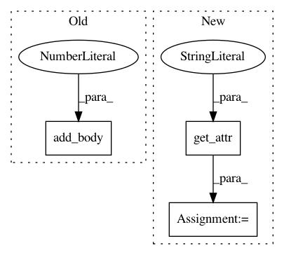

13ba9a024d50038d94706beeb5267a88a1a2ac5e,mmdnn/conversion/tensorflow/tensorflow_emitter.py,TensorflowEmitter,emit_Slice,#TensorflowEmitter#Any#,584
Before Change
extra_str += ", begin_mask={}".format(IR_node.get_attr("begin_mask"))
if IR_node.get_attr("end_mask"):
extra_str += ", end_mask={}".format(IR_node.get_attr("end_mask"))
self.add_body(1, "{:<15} = tf.strided_slice({}, {}, {} {}, name="{}")".format(
IR_node.variable_name,
self.parent_variable_name(IR_node),
IR_node.get_attr("starts"),
IR_node.get_attr("ends"),
extra_str,
IR_node.name))
def emit_Shape(self, IR_node):
self.add_body(1, "{:<15} = tf.shape({}, name="{}")".format(
IR_node.variable_name,
After Change
if IR_node.get_attr("end_mask"):
extra_str += ", end_mask={}".format(IR_node.get_attr("end_mask"))
if IR_node.get_attr("shrink_axis_mask"):
extra_str += ", shrink_axis_mask={}".format(IR_node.get_attr("shrink_axis_mask"))
code = "{:<15} = tf.strided_slice({}, {}, {} {}, name="{}")".format(
IR_node.variable_name,
self.parent_variable_name(IR_node),
In pattern: SUPERPATTERN
Frequency: 3
Non-data size: 3
Instances
Project Name: Microsoft/MMdnn
Commit Name: 13ba9a024d50038d94706beeb5267a88a1a2ac5e
Time: 2019-01-07
Author: 42927787+rainLiuplus@users.noreply.github.com
File Name: mmdnn/conversion/tensorflow/tensorflow_emitter.py
Class Name: TensorflowEmitter
Method Name: emit_Slice
Project Name: Microsoft/MMdnn
Commit Name: 13ba9a024d50038d94706beeb5267a88a1a2ac5e
Time: 2019-01-07
Author: 42927787+rainLiuplus@users.noreply.github.com
File Name: mmdnn/conversion/tensorflow/tensorflow_emitter.py
Class Name: TensorflowEmitter
Method Name: emit_Constant
Project Name: Microsoft/MMdnn
Commit Name: 13ba9a024d50038d94706beeb5267a88a1a2ac5e
Time: 2019-01-07
Author: 42927787+rainLiuplus@users.noreply.github.com
File Name: mmdnn/conversion/tensorflow/tensorflow_emitter.py
Class Name: TensorflowEmitter
Method Name: emit_Conv